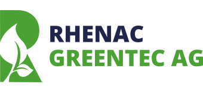

Martin Davidsen
Software & AI Engineer
From electrician, to offshore technology for oil production, to critical infrastructure projects onshore, to AI-driven applications — fifteen years turning hands-on curiosity into systems people depend on.
Engineer at the meeting point of hardware, software, and AI
I've been around technology for about fifteen years, and it started with my hands. I trained as an electrician and earned a Bachelor's in Maritime Electrical Automation, then spent years commissioning systems offshore — wiring panels, chasing faults, and getting equipment running where failure isn't an option. That's where I learned how real systems actually behave.
Curiosity kept pulling me up the stack. From the physical equipment I moved into the software that controls it — subsea production systems, offshore platforms, and critical infrastructure — and from there into full-stack software and, more recently, AI engineering. Today I design, build, and operate LLM-driven systems and web applications end-to-end through my own company, Agentas AS, and AI tooling is a core part of how I ship.
What ties it all together is simple: I like building things and making them work — not just to a demo, but running in production with real users. Whether it's a control system, a web app, or a side-project game, I want to understand every layer and own the result.
Hands-on industrial discipline paired with modern, AI-augmented software engineering — that's what I bring to a team.
What I'm good at
Full-Stack Software
End-to-end web applications — back-end services, data pipelines, APIs, and clean front-ends. I build the whole thing and I run it in production, not just to a demo.
AI Engineering
LLM-driven systems built and operated for real use — agents, automation pipelines, and AI-augmented tooling. I use Claude Code daily as a core part of how I design and ship software.
Industrial Automation
Control software for critical systems — PLC programming, operator screens (HMI/SCADA), and the communication that ties field equipment to the systems above it. Proven on live oil & gas and infrastructure projects.
Infrastructure & DevOps
I run my own production-grade homelab — containers, reverse proxies, CI/CD, monitoring, and layered security with rehearsed backups. The same operational discipline I apply to client systems, applied to my own.
Private & On-Prem AI
Running AI models entirely on your own hardware — so sensitive data never leaves the building. I run open-weight LLMs (Llama, Mistral, Qwen) on my own machines and homelab, and bring the private-retrieval (RAG) and agent patterns I use in the cloud fully on-premise. It's the natural meeting point of my AI engineering and years of self-hosting — and exactly what regulated industries increasingly need.
Things I've built and run myself
A selection of software and AI systems I've built end-to-end on my own infrastructure. Real users, real traffic, real consequences when something breaks. Each one focuses on the engineering — the architecture and the operational discipline — rather than the specific domain it serves.
Vehicle Telemetry Automation
An automation pipeline that pulls live vehicle telemetry into a structured database, then runs scheduled jobs that feed mileage and timesheet entries to downstream business systems. Replaces a recurring monthly manual task entirely — small in scope, real in time saved.
View details →Agentas WebOps — Internal Ops Panel
The internal panel that runs the website business end-to-end: client and site registry, an accounting-driven billing watch that auto-suspends non-paying sites via an nginx maintenance map, and a full leads engine — public-registry discovery, enrichment and scoring, drip outreach with hard daily caps, and a deal pipeline through to invoicing. Express + built-in node:sqlite, zero native dependencies, one process. The unglamorous machinery that makes the studio run itself.
View details →Consulting Lead Engine
The internal engine behind the Agentas consulting arm: it discovers relevant opportunities from official Norwegian job and company registries, enriches and validates contacts, ranks them into tiers, and drafts paced, gated outreach — a full discover-to-deal pipeline in one hardened Express + node:sqlite service, with measured email-match rates around 50% on real datasets. Internal-only; shown here as a capability.
View details →Automated Trading Platform
An automated trading platform spanning crypto and equities — a strategy engine with backtesting, execution simulation and a live cockpit, all sharing one code path proven identical across backtest and live to within a rounding error. 280+ automated tests, a deterministic decision core (no LLM in the trade loop, by design), and every result reported against random-baseline nulls. Runs as several containers from a single image.
View details →AI-Assisted Market Analysis
A research platform that ingests official company disclosures, classifies them with an LLM, and puts every candidate signal through rigorous statistical validation — null-hypothesis baselines, permutation gating and a realistic cost model — before any number is trusted. Built to test market hypotheses honestly: measure first, believe later. The engineering is the point — disciplined data pipelines and statistical rigour over hype.
View details →Watcher — LLM-Graded Watchlists
A self-hosted scout that watches Norwegian marketplaces, public tenders and job boards, then grades every hit with a headless LLM — each call runs in a sandbox where every tool is explicitly denied (verified against the real CLI, not assumed), and all external free text is fenced as data, not instructions. FastAPI dashboard with per-run token cost accounting; ships as one hardened container: read-only filesystem, all capabilities dropped, non-root. Prompt injection treated as an operational reality, not a footnote.
View details →Table-Scout — AI Restaurant Finder
An LLM-assisted local restaurant finder — “what's open now, book a table for four at seven.” It ingests open geodata and the official business registry, matches and geocodes venues, detects booking providers, and answers in the asker's own language. Wired into my smart home as a voice agent, and built with careful data-licensing hygiene: open-data columns kept structurally separate from own-collected data.
View details →AssistKey — Push-to-Talk for Home Assistant
A Windows system-tray push-to-talk client for Home Assistant Assist — hold a hotkey, speak, get an answer. Deep native integration: DPAPI-encrypted token at rest, per-user autostart via the registry, dark-titlebar and monitor-aware window handling, single-instance control, and an optional wake word. Open source, packaged as a single-file executable with CI on Windows.
View details →Self-Hosted File Platform
A self-hosted file-management platform (Go + React) built around a deliberate security model from day one — access control, audit logging, encrypted backups, and regularly rehearsed recovery. Designed so that “self-hosted” is safer than the cloud alternative, not an excuse to be sloppier.
View details →Private Cloud Infrastructure
A multi-server environment grown over two years into a small private cloud — 15+ services across web apps, automation, monitoring, and home systems. Standardised deployment pipeline, layered defence-in-depth security, three-tier backups with rehearsed recovery, and a living architecture reference kept like a runbook.
View details →Multi-User Analytics Platform
A public analytics platform with a server-side parsing pipeline (worker-thread architecture for high-throughput ingestion), normalised relational storage, and a modern web front-end. Runs across four isolated containers — separate dev and prod environments — behind a shared reverse proxy. Built and operated single-handedly.
View details →Go Computational Simulator
A computational simulator written in Go with a browser-based UI and a continuous evaluation harness that compares simulator output against real observed data — surfacing discrepancies explicitly rather than papering over them. Multi-class architecture with a shared widget system across simulators.
View details →NoBS — Workout Log
A no-BS gym app — only the stuff you use at the rack: sets, reps, kg, a rest timer, heart rate. Local-first, no account, no subscription. Built as a React + TypeScript PWA, packaged for Android with Capacitor, with its own landing page and public APK download.
View details →Baby Suite — Three Local-First PWAs
Three installable web apps built around our baby's arrival — a contraction timer, a feed/sleep/diaper tracker, and a postpartum pelvic-floor trainer. Each app runs a sync conflict model deliberately chosen for the data it handles, with hand-rolled dependency-free Web Push (VAPID + payload encryption in raw WebCrypto), server-side alert rules on a cron, and free-tier quotas treated as a hard design constraint. In daily family production — where an outage means a missed 3 a.m. feed alarm.
View details →Dreadmark — Isometric Action-RPG
A top-down isometric gothic action-RPG — Diablo-leaning combat and a legible loot loop, built in TypeScript, Three.js and an ECS on the Frostwake engine foundation. A playable prototype exploring real-time 3D combat with the same AI-augmented, multi-session workflow.
View details →Frostwake — 3D Survival Game
A top-down 3D survival game built in TypeScript on Three.js with an entity-component-system architecture — chunked world streaming, a deterministic simulation core, hundreds of unit tests, and an automated play-testing harness that drives the real game over a debug protocol.
View details →Website Studio
A productised website service for local businesses and individuals — a library of ready-made, mobile-first templates (business + portfolio), each a real live demo. Tailored per client and hosted end-to-end: design, build, containerised deploy, reverse proxy, DNS. Built and run by me — today it's Agentas Web, the SMB arm of my company Agentas AS.
View details →Most repositories are private, but I'm happy to do a code walkthrough or live demo for a serious conversation — just get in touch.
Where I've delivered
Founder — AI-First Software Engineering
Agentas ASI founded and run Agentas AS — an AI-first software engineering consultancy. I ship software end-to-end with an AI-augmented workflow built on Claude Code, grounded in the industrial track record below. Through Agentas Web, the company's website service, I design, build, and host sites for small businesses on my own infrastructure — multiple sites live in production, including this one.
Software Lead — Subsea Control Systems
Siemens EnergySoftware lead for complete subsea control systems on the Symra and Hanz tie-ins (Ivar Aasen). Built the software managing communication between the platform and underwater equipment, operator screens, simulation tools, and integration of valves, flow meters, and hydraulic systems — delivered through factory testing, on-site startup, and into production. Hanz has been producing since 2024, and Symra reached first oil in 2026 with all four wells now in production. Along the way I built a tool that generates the control-system software for new subsea wells automatically — cutting per-well build time from weeks to hours.
Automation & Software Engineer — Critical Infrastructure
OneCoControl software and operator screens for critical infrastructure — a backup water-supply system for Norway's capital, and smart building automation (intelligent lighting and building management) for one of Norway's largest hospital construction projects, Nye SUS in Stavanger.
Automation Engineer — Platform Digitalisation
SiemensModernising and digitising control systems on the Valhall offshore platform — upgrading monitoring software and producing safety documentation to Norwegian industry standards.
Foundation — Electrical Automation & Offshore Commissioning
Earlier careerBachelor's in Maritime Electrical Automation and certified electrician credentials, followed by hands-on offshore commissioning and startup work. This is where I learned how real, high-stakes systems behave — knowledge I still draw on when building software today.
Companies I've worked with



What I build with
Languages
Web & Backend
AI & LLMs
Infrastructure
Industrial & Automation
Ways of Working
I don't really switch off
The curiosity that drives my work doesn't clock out at five. Most of what I know I picked up by building things for myself — which is also the best way I've found to stay sharp.
Building games
I make 3D games in my spare time — a survival game in TypeScript on Three.js with a full entity-component-system, deterministic simulation, and hundreds of tests. It's where I get to over-engineer for the fun of it.
Running my own cloud
My homelab is a small private cloud — servers, containers, monitoring, and rehearsed backups running the same way real production does. If I want to learn something, I stand it up and run it for real.
Automating home & car
I like it when everyday tech just works, so I automate it — a smart home I built and version-control myself, and a pipeline that turns my car's telemetry into finished timesheets. Small problems, properly solved.
Life outside the screen
Away from the keyboard I'm usually outdoors — hiking and getting out in nature, on the water with the boat, or training. Most of all, time with my family and building a good home is what keeps everything else in balance.
Let's talk
I'm open to interesting roles and conversations — software engineering, AI engineering, or anything at the intersection of software and the physical world. Drop me a line and I'll get back to you.